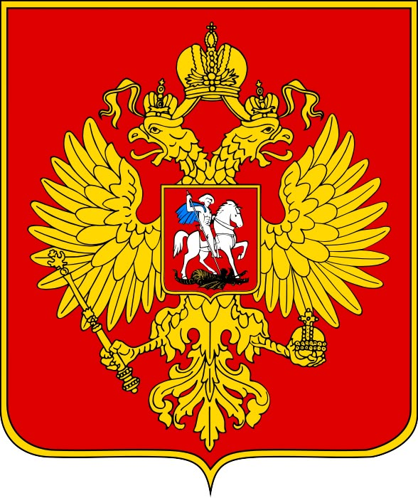

Государственный информационный ресурс • Официальный сайт
Версия для слабовидящих (ГОСТ Р 52872-2012)

КРОВЛЯ ЛЕГЕНДА ДОНА
Строительная компания | Ростов-на-Дону
✓ ПРОВЕРЕНО ИСПОЛНИТЕЛЯМИ
Ростов-на-Дону — Южная столица России
Официальная справочная система, проверенные исполнители и городские веб-ресурсы
Городские веб-ресурсы и организации
Здесь будет ссылка 1
Здесь будет ссылка 2
Здесь будет ссылка 3
Здесь будет ссылка 4